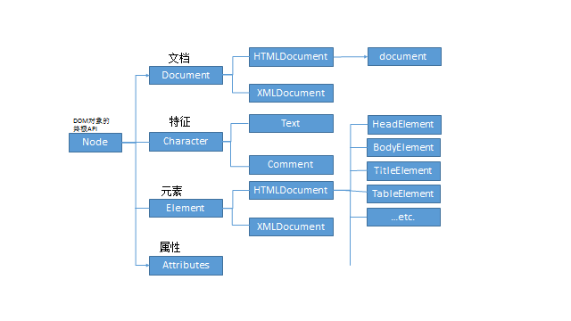

DOM提供了很多实用的API，这些API让我们可以轻松的访问HTML文档。所谓API（应用程序接口），简单来说，就是让我们可以直接使用它访问程序的一些属性或方法，而不用了解程序内部的运作过程和原理。
前面我们已经了解了DOM把HTML文档解析为节点树，实际上HTML节点树只是整个DOM树的一个分支，另一个分支则是XML。在详细介绍HTML DOM节点的操作之前，先来看一下完整的DOM树：

网上没找到关于完整的DOM树的图，所以自己大致做了一个。准确说这个应该叫DOM继承树，因为很多我们常用的DOM对象的方法都绑定在Document和Element对象上。我们从HTML文档获取的DOM元素上使用的方法，其实大部分都继承自这俩。（上图Element的子分支写错了，应该是HTMLElement和XMLElement，之前的图不见了，懒得重新做，特此说明）
这里放一段HTML代码供后面测试使用：
1 <body>
2 <h1 class="h1">h1</h1>
3 <h3 id="h3">h3</h3>
4 <div name="div">
5 <p>
6 <span>span</span>
7 </p>
8 </div>
9 </body>
一 查找节点
1， 元素(标签)查找
document代表整个文档。
document.getElementById():通过标签ID属性查找元素。绑定在Document上所以只能使用document调用。
document.getElementsByName()：通过标签name属性查找元素（所有的）。绑定在HTMLDocument上，只能使用document调用。
.getElementsByTagName()：通过标签名查找元素（所有的）。Document和Element上均有绑定。
.getElementsByClassName()：通过标签class属性查找元素（所有的）。Document和Element上均有绑定。
.querySelector()：通过css方式查找元素。Document和Element上均有绑定。
.querySelectorAll()：通过css方式查找元素（所有的）。Document和Element上均有绑定。
注意，最后两个虽然速度快，但它不是实时的查找元素，而是这一时刻的静态快照，如果这之后DOM结构发生改变，可能会产生预期之外的结果，所以使用的时候请务必小心。
1 var h3 = document.getElementById("h3"),
2 h1 = document.getElementsByClassName("h1")[0],
3 div = document.getELementsByName("div")[0],
4 p = document.getElementsByTagName("p")[0],
5 span = p.getElementsByTagName("span")[0];除了.getElementById和.querySeletor是获取单个元素外，其他方式都是获取一组元素，返回值都是类数组，所以访问需遵循数组访问方式。
2， 节点树遍历（包含所有类型节点）
node.parentNode：获取节点的父节点。
node.childNodes：获取节点的所有子节点。
node.firstChild：获取节点的第一个子节点。
node.lastChild：获取节点的最后一个节点。
node.nextSibling：获取节点紧邻的下一个兄弟节点。
node.previousSibling：获取节点紧邻的上一个兄弟节点。
多数情况下我们都是访问元素节点，所以这里就不举例说明了。
3， 元素节点树遍历（只包含元素）
node.parentElement：获取节点的父元素节点。
node.children：获取节点的所有子元素节点。
node.firstElementChild：获取节点的第一个元素子节点。
node.lastElementChild：获取节点的最后一个元素子节点。
node.nextElementSibling：获取节点的紧邻的下一个兄弟元素。
node.previousElementSibling：获取节点的紧邻的上一个兄弟元素。
元素节点都有一个attributes属性，值是该元素节点的属性集合,诸如id，class，name等等，也是一个类数组。
1 h3.parentElement;//body
2 p.children[0];//span
3 document.body.firstElementChild;//h1
4 document.body.lastElementChild;//div
5 h1.nextElementSibling;//h3
6 div.previousElementSibling;//h3
二 创建节点
1，创建
document.createElement();创建元素节点。
document.createTextNode();创建文本节点。
document.createComment();创建注释节点。
1 document.createElement('button');
2 document.createTextNode('我是文本')；
3 document.createComment('我是注释');
2，插入
parentNode.appendChild();向父元素内部的最后一个位置插入节点。
parentNode.insertBefore(a,b);向父元素内部b节点之前插入a节点。
1 var strong = document.createElement("strong");
2 p.appendChild(strong);
3 console.log(p);//<p><span>span</span><strong></strong><p>
4 var text = document.createTextNode("some text");
5 div.insertBefore(text,p);
6 /*
7 <div>
8 some text
9 <p>
10 <span>span</span>
11 <strong></strong>
12 </p>
13 </div>
14 */
三 删除节点
1，删除
parentNode.removeChild()；父节点删除子节点，从页面剪切出来，有返回值。
node.remove();节点自己，直接删除，无返回值。
1 <div>
2 <p></p>
3 </div>
4 *********************************
5 var oDiv = document.getElementsByTagName('div')[0],
6 oP = document.getLEementsByTagName('p')[0];
7 oDiv.removeChild(oP);//父删子
8 //oP.remove();删自己
2，替换
parentNode.replaceChild(new,old)；用new节点替换父元素内部old节点。用的很少。
1 var removedH1 = document.body.removeChild(h1);
2 console.log(removedH1);//<h1 class="h1">h1</h1>
3 var removedH3 = h3.remove();
4 console.log(removedH3);//undefined
补充：元素节点的属性和方法
属性
node.innerHTML;获取父节点内部的HTML结构。
node.innerText/textContent；获取父节点内部的文本内容。
方法
node.setAttribute();设置元素的属性和值。
node.getAttribute();获取元素的属性值。
1 div.innerHtml;//<div><span>span</span></div>
2 span.innerText;//"span"
3 h1.getAttribute("class");//"h1"
4 h1.setAttribute("id","idh1");//<h1 class="h1" id = "idh1"></h1>